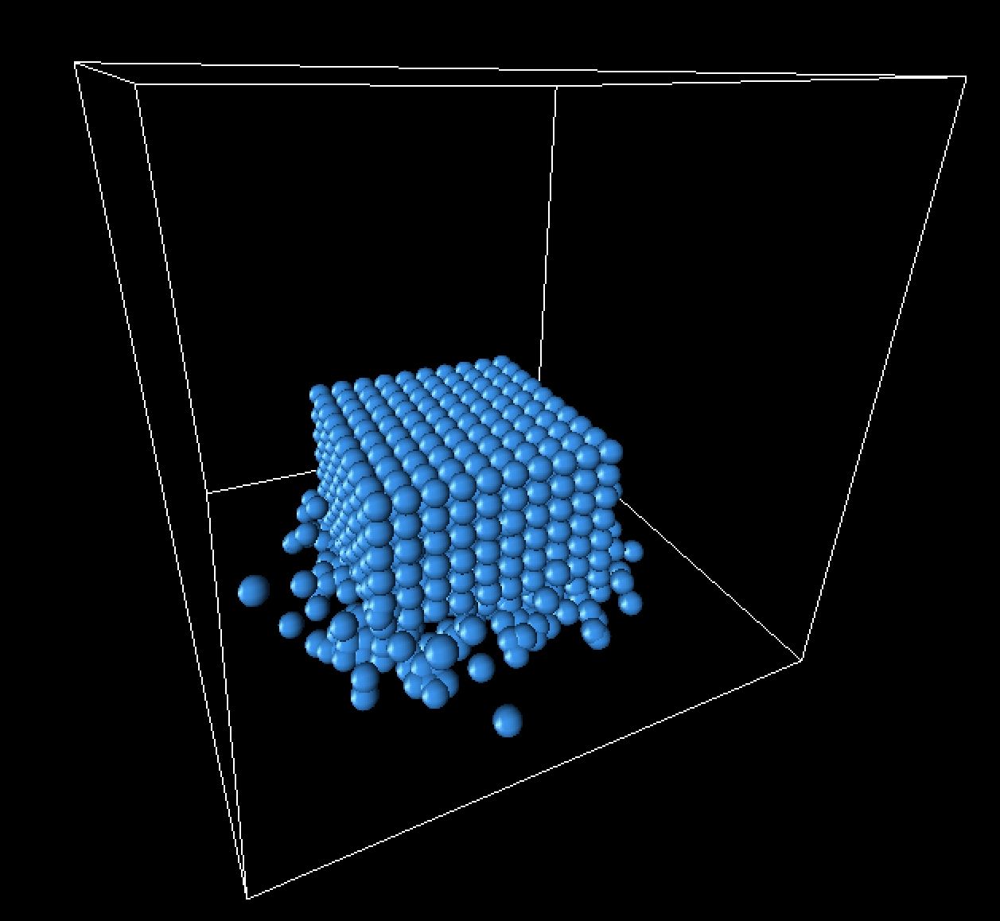

+ Technical approach
+ Results
+ References
+ Contributions from each team member
Since our particles ought to move, we'll need to periodically calculate a new position for each particle. To do this, we follow the simulation loop depicted in Macklin & Müller.1 As a high level overview, the loop undergoes the following procedure during every time step:
As with any fluid-based system, we want our particles to interact. For example, we might ask our particles to repel each other when they collide; this, in fact, is what we want to do in our program. However, this raises a question: how will we know which particles actually collide? A naïve algorithm would need to test each particle against every other particle for collisions. If we define the input to be the number of particles in the simulation, that's an O(n2) operation!
Unfortunately, modeling accuracy demands that real systems include millions of particles. With our naïve O(n2) algorithm, that would equate to millions times millions of collision tests (i.e. trillions of tests). Even with modern computing power, it's quite the stretch to make this happen every quarter-second or so.
And so, in pursuit of acceleration, we turn to a grid-based data structure as storage for our particles.
To circumvent the problem that was just described, we'll organize our particles into a uniform grid, taking advantage of the fact that particles will only actually interact with their neighbors. Our 3D grid will spatially subdivide the world into equally-sized cells, with each having a size equal to that of a single particle. Then, every individual particle is assigned to a grid cell based on the location of its center.
There are several implications here. First of all, our grid is going to change every time step, since its composition is based on the locations of particles that move around. Accordingly, we'll have to reconstruct the grid during every iteration of the simulation loop.
On the other hand, when we test a particle for collisions, we'll now only have to test it against particles that are actually potential neighbors – or, in other words, particles tied to the 27 cells surrounding the original particle's cell. That's a lot less collision tests to make, especially when you consider that any given cell can have at most four particles tied to it.
Constructing the grid involves several steps (several kernels). In our code, we follow the process outlined in Simon Green's paper2 on particle simulation.
(particle_x + box_side_length) / particle_diameter * cells_per_side2 + (particle_y + box_side_length) / particle_diameter * cells_per_side + (particle_z + box_side_length) / particle_diameterWe increment by
box_side_length because by nature the coordinates range from -box_side_length to box_side_length. Since we can't have negative indices in an array, we add this step so that our coordinates range from 0 to 2 * box_side_length instead.
particle_diameter because that's the side length of a cell (by definition). If all of the cell lengths were mapped out over a line, then performing this division would give us a value that was 0 for a coordinate in the first cell length, 1 for a coordinate in the second cell length, and so on so forth.
particleHash array. This array will serve as a persistent record of all the particles and their associated cells.
thrust library. At this point, we have a collection of particle IDs ordered by cell.
particleHash array pair, or -1 if no particles exist in that cell. This is effectively our grid; it's a 2D array with a size equal to the total number of cells. At each cell index (which is equivalent to one of the cell hashes we calculated earlier), we keep track of the first particleHash index of its associated cell.
|
|
With a grid, neighbor determination becomes a lot easier. If we define neighbors to be any particles occupying any of the 27 grid cells surrounding an original particle (this includes particles occupying the particle's cell itself), then we can write a triple nested loop (+1 for triple nested loops!) taking each coordinate from the center of the current cell minus a cell length to the center of the current cell plus a cell length. Then, in the innermost part of the loop (the portion that will happen once for all 27 cells), we compute the cell hash of our proposed (x, y, z) tuple, grab the start of that cell in the particleHash array, and loop through that array for as long as the cell in particleHash is equal to the cell we're interested in.
Via this process, we can go through all the neighboring particles and run collision tests (or run any kind of interaction code, actually) on them. We assume that two sphere-based particles collide if the distance between their centers is less than the sum of their radii.
If they do collide, we force the particles apart by modifying their velocity attributes. Basically, we switch the components of the colliding particles' velocities that are normal to the collision, which causes the particles to bounce away from each other. (Note: in retrospect, particle repulsion can be taken care of entirely by the "near pressure" component of the artificial pressure term, which pushes away particles that are within half of the smoothing kernel width. However, artificial pressure was not fully implemented by the time we wrote our collision code, so at the time we didn't realize this.)
We enforced incompressibility by setting density constraints on each particle, using smoothed particle hydrodynamics (SPH) in order to compute the density. The equation of density constraint for each particle is
where p1 through pn are the positions of particle i and its neighbors. (We find the neighbors of a particle according to the method described in the previous section.) This particle's estimated density, ρi, and its ratio to the resting density ρ0, a known constant, are also used in this constraint equation.
To solve for ρi, we use the standard SPH density estimator (introduced by Monaghan's Smoothed Particle Hydrodynamics paper):
In the equation above, mj refers to the jth neighbor's mass, W refers to the smoothing function, and h refers to the smoothing radius. The SPH density estimator therefore takes a weighted sum over the masses of all of particle i's neighbors, where the weights are the values of the Poly6 smoothing kernel relative to the jth neighbor's position (which is indicated by the fact that pi - pj, or the distance of the jth particle from the ith particle, is passed into W.)
The equation for the smoothing kernel is as follows:
We can see that the smoothing kernel function is dependent on r, the distance or "radius" between a particle and its neighbor, and h, the kernel's radius. Notice that the gradient of the smoothing kernel approaches 0 at the center. This introduces some clumping, which can be solved by the introduction of the Spiky kernel and artificial pressure forces.
Now that we've figured out the density of the particle using smoothed particle hydrodynamics, we must solve for the particle position correction (known as Δp) which satisfies the following constraint:
We solve this constraint using Newton's method, stepping along the constraint gradient. The constraint gradient can be found using the equation
where ρ0 is the resting density as before, and the gradient of W is found by taking the partial derivative of the Spiky kernel function (given below):
We sum over the neighbors pj of the particle, and for non-neighbor particles we subtract the gradients. Plugging this into the particle position correction equation above, we end up with a solution of:
This is a Lagrange multiplier which we can use to satisfy our above constraint. The symbol ε in this case is a relaxation parameter, which we can adjust to produce the best results.
As mentioned before, a common problem that arises from SPH simulation occurs when particles clump together in order to satisfy the resting density constraints. This can be solved by adding an artificial pressure term to the position update:
We see this is defined in terms of the smoothing kernel itself and is simply the ratio of the kernel's output of the given particle to the kernel's output of a fixed point. This ratio is then raised to a power n and multiplied by a constant k (for our simulation, we found that n = 4 and k = 0.1 worked well). The resulting particle position update thus became:
The addition of this simple artificial pressure term improved our results greatly.
One of our issues involved particles escaping the box. As velocity increased and position updates were made, they would bypass our boundary constraints that were originally made only at the beginning of the simulation loop. Meanwhile, there were a lot of edge cases, such as when the particle was outside of the box but its velocity was directed toward the inside of the box.
To resolve this error, we had to enforce border constraints in several places. Aside from the beginning of the simulation loop, we essentially enforced extra constraints anytime the particle's estimated position was being updated.
|
|
One of the most important things we learned from this project was how to digest technical scholarly papers and actually implement the methods described in them. Neither of us had had much experience with research papers, so it was interesting to be able to read and understand a paper that would normally only be read by other esteemed members of academia (and not measly undergrads).
We also gained a new perspective on how multivariable calculus and physics can have applications in computer science, as shown by the heavy usage of gradients, Lagrange multipliers, and kernel functions.
Overall, this project was a challenging yet fun way to get our feet wet in the world of fluid dynamics. Position-based fluids is just one of many techniques that can be used to simulate realistic fluid dynamics. This project has only whetted our appetites to go out and explore more awesome applications of graphics!
Below is a brief rendering of our fluid simulation. Imagine what it might look like if the particles were all smoothed out and textured as water:
One parameter that had a considerable impact on the quality of our simulation was the number of iterations of Newton's method. As we increased the number of iterations performed, our results converged more towards realistic behavior. However, we did have to make major trade-offs in time in exchange for a large number of iterations. We found that ten iterations was close enough to reality, as there was no significant visible improvement as we increased the iteration count after that. Below are some clips comparing the varying numbers of iterations.
One iteration of Newton's method:Notice how the landing of the cube does not have any splashes at all, and the fluid seems to clump exclusively around the center. The motion is almost purely two-dimensional and very simplistic.
Two iterations of Newton's method:With two iterations, the behavior of the particles becomes a bit more complex, but we can see that they are still lacking dimension and are not splashing around much.
Five iterations of Newton's method:With five iterations, splashing becomes visible at the landing of the cube, and the behavior of the particles is much more chaotic. The fluid continues to splash and ripple long after the cube has landed, which is similar to real-life behavior.
Ten iterations of Newton's method:As with the previous clip, we can see some significant splashing here.
One hundred iterations of Newton's method:100 iterations of Newton's method allows us to see that there is no significant difference once we pass 10 iterations. The result has nearly converged.
Below is a clip of a cube landing without the artificial pressure term, to compare with the above videos (which do include the artificial pressure term).
Ten iterations of Newton's method, no artificial pressure:We can see that without the artificial pressure term, our fluid behaves pretty erratically and clumps together quite a bit.
Below are some still frames from our simulation, focusing specifically on the landing of the fluid cube.
|

|
|
|
|
|
|
|
1 Position-Based Fluids (Macklin and Müller)
2 Particle Simulation using CUDA (Simon Green)
3 Smoothing Particle Hydrodynamics (Monaghan)
4 Slides of Position-Based Fluids (Macklin and Müller)
5 Accurate Collision Detection Between Circles or Spheres
6 Slides describing Position-Based Fluids from Chalmers University of Technology
Arissa implemented the mathematics for density constraints, meaning that she researched and instituted the Poly6 kernel for density estimation, the Spiky kernel for gradient calculation, and calculations for the scaling factor λ. She also added the code to compute the change in particle position for every time step and to calculate the artificial pressure term.
Owen worked on the grid structure, meaning that he wrote the code for its representation and for its sorting-based generation. He also implemented neighbor computation in the simulation loop, alongside collision detection/response behavior. Finally, he added a damping factor to rebound cases, so that particles didn't accelerate so much (especially when heading upward).
In the spirit of teamwork, both members of the group worked on several bugs; for example, the glitch in which particles ended up escaping the box. In this case, Arissa wrote a function to check whether particles were inside the cube; Owen generalized it and added extra boundary constraints to the beginning of the rendering loop. Arissa added more constraints to the end of the rendering loop, and Owen added the rest to the middle.
Overall, both team members spent a generally similar amount of time on the project and gained a good deal of knowledge from reading the other's code.